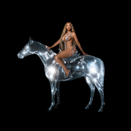

RENASCENÇA
RENAISSANCE
BeyoncéAbertura
I'M THAT GIRL · EU SOU A TAL GAROTA
"Chego com essas roupas, fico tão boa nelas"
"Porque eu sou fodona"
"Você sabe que todas essas músicas soam bem"
"Porque eu sou fodona..."
"I pull up in these clothes, look so good"
"'Cause I'm in that ho"
"You know all these songs sound good"
"'Cause I'm in that ho..."
Encerramento
SUMMER RENAISSANCE · VERÃO DA RENASCENÇA
"Versace, Bottega, Prada, Balenciaga"
"Vuitton, Dior, Givenchy, junta suas moedas, Beyoncé"
"Tão elegante e ousada, desfilando essa alta-costura"
"Essa bolsa Telfar é importada, as Birkins estão guardadas"
Versace, Bottega, Prada, Balenciaga
Vuitton, Dior, Givenchy, collect your coins, Beyoncé
So elegant and raunchy, this haute couture I'm flaunting
This Telfar bag imported, Birkins, them shits in storage
I'm in my bag
Melhores músicas
ALL UP YOUR MIND · POR TODA A SUA MENTE · Beyoncé · 2:29Mais de 70 milhões de streams no Spotify
HEATED · FERVENDO · Beyoncé · 4:20 ALIEN SUPERSTAR · ALIENÍGENA SUPERESTRELA · Beyoncé · 3:35Melhores versos
Música: BREAK MY SOUL · QUEBRAR MINHA ALMA · Beyoncé · 4:38
"Acabei de me apaixonar"
"E pedi demissão do meu trabalho"
"Vou encontrar um novo propósito"
"Droga, me exploravam demais"
"Faça o trabalho de nove"
"Saia depois das cinco"
"Me deixavam no limite"
"Por isso não consigo dormir à noite"
"Now, I just fell in love"
"And I just quit my job"
"I'm gonna find new drive"
"Damn, they work me so damn hard"
"Work by nine"
"Then off past five"
"And they work my nerves"
"That's why I cannot sleep at night"
Melhor performance
Beyoncé | Alien Superstar | DVD The Renaissance World Tour (HD) | 12 de mai. de 2023 | Performance of the song "Alien Superstar" in The Renaissance World Tour | 29 pessoas morrerram durante o show
Faixas
Comentários
"Renaissance" é o sétimo álbum de estúdio da cantora e compositora americana Beyoncé, lançado em 29 de julho de 2022 pela Parkwood Entertainment e Columbia. Este álbum marca o primeiro lançamento solo de Beyoncé desde "Lemonade" em 2016 e é a primeira parte de uma trilogia. "Renaissance" estreou no topo da parada Billboard 200, tornando-se o sétimo álbum consecutivo de Beyoncé a alcançar essa posição. O álbum vendeu 332.000 unidades equivalentes na semana de lançamento, sendo a maior estreia de uma artista feminina em 2022. Beyoncé ganhou quatro prêmios Grammy em 2023 pelo álbum, incluindo Melhor Álbum de Dance/Eletrônica, e se tornou a artista mais premiada na história do Grammy, com um total de 32 vitórias. O álbum também alcançou o topo das paradas em vários países, incluindo Austrália, França, Alemanha e Reino Unido. "Renaissance" é um testemunho da capacidade de Beyoncé de se reinventar e continuar a dominar a indústria musical.